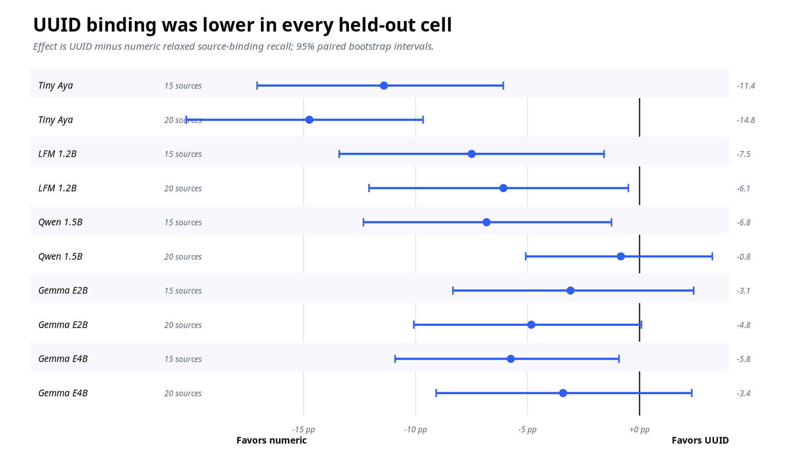
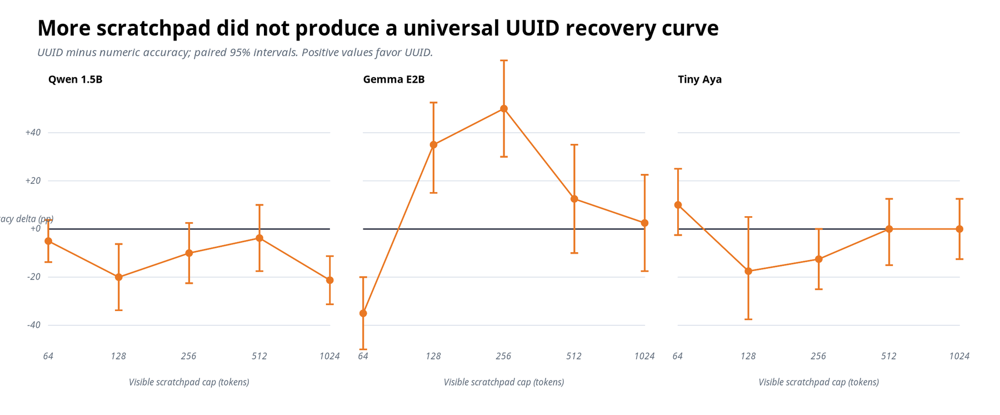
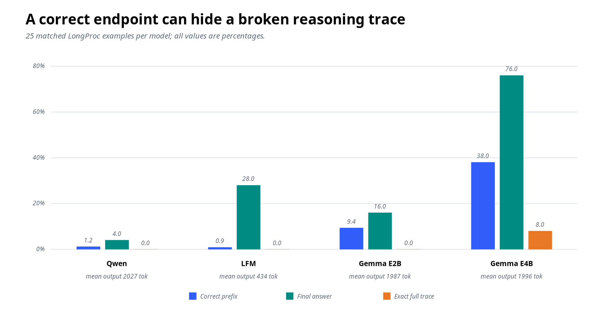
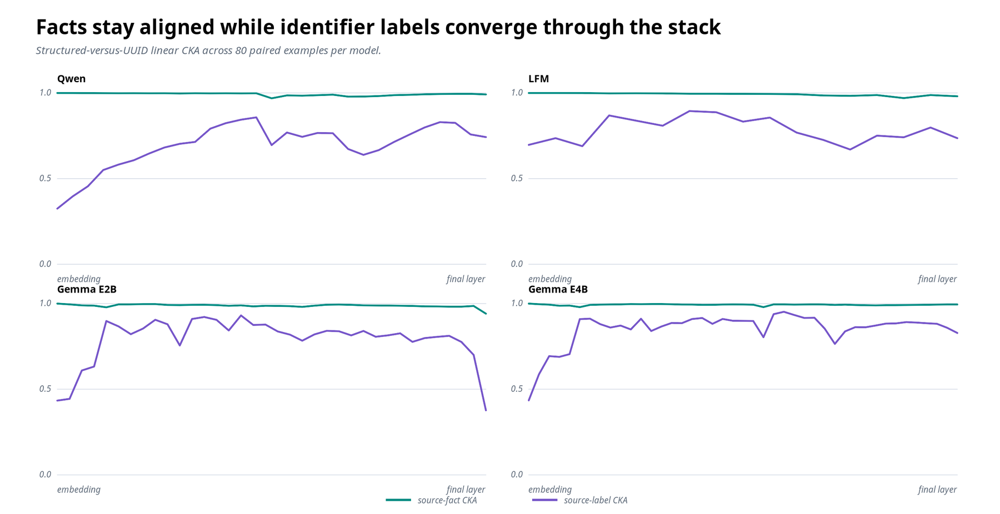
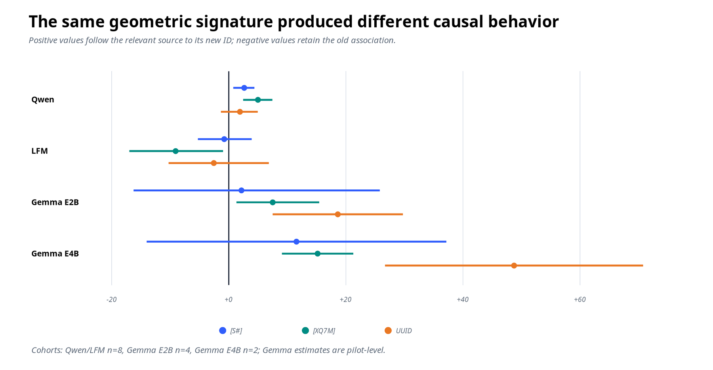
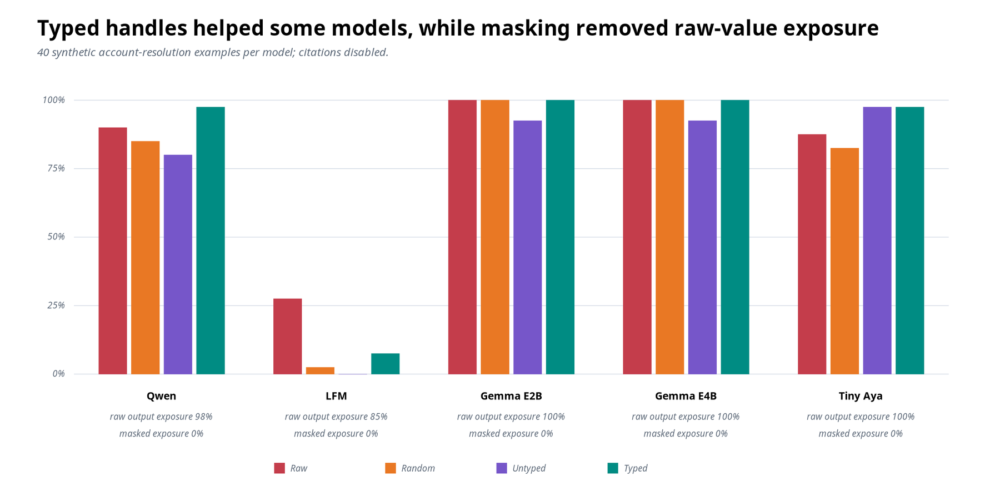
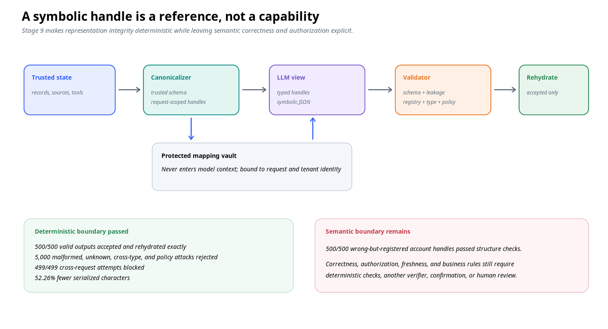

Structured handle
[S1]
235input tokens
1.7slatency
96%exact binding
Backend identifiers are convenient for software. Our experiments show why they are often the wrong reasoning interface for a language model.
Read the evidenceA model asked to cite 8ce71ad9-71f2-4a03-b7f2-26f64e0db302 must distinguish, bind, preserve, and reproduce a string whose characters usually contribute nothing to the answer. The application can show <SOURCE_1> instead and keep the reversible map in trusted code.
If characters do not matter, replace them with request-scoped handles.
This is not one prompt benchmark. It is a sequence of behavioral, controlled, mechanistic, and systems experiments designed to separate token cost, source binding, literal reconstruction, reasoning budget, internal representation, and validation.
The behavioral total is 18,020 model generations. Hidden-state passes, causal interventions, valid round trips, and adversarial system tests are counted separately because they answer different questions.
Transport cost: an opaque identifier may occupy roughly thirty tokens where a compact handle occupies three or four. Repeating twenty identifiers changes prefill work, output length, latency, and the number of opportunities for a copying error.
Binding: the model must associate a fact with the right source or entity. The surface form of an identifier may make that association easier or harder even when the passages, question, answer, and source order are identical.
Reconstruction: a model can know which source it wants and still fail to reproduce the literal identifier or its wrapper. A metric that scores S7 and [S7] as unrelated answers confounds evidence selection with serialization.
Reasoning budget: identifier bookkeeping might compete with task reasoning under a fixed output budget. This was the most ambitious explanation and, importantly, the one our confirmatory runs did not support as a general law.
| Experiment | Scale | Question | Result |
|---|---|---|---|
| Stage 1 + controls | 2,000 generations | Do compact IDs change cost and citation binding? | Large UUID cost; early binding effects varied by model. |
| MuSiQue Stages 2–4 | 7,500 generations | Does the effect survive multi-hop retrieval and structural controls? | UUID binding fell in every primary comparison; answer effects were smaller. |
| Held-out MuSiQue | 2,000 generations | Does the primary binding result replicate? | UUID binding was lower in 10 of 10 cells. |
| Reasoning budget | 5,600 two-pass generations | Does more scratchpad space erase the UUID penalty? | No general monotonic recovery; output cost persisted. |
| LongProc | 100 long generations | Does long output imply a correct state trace? | No. Length, endpoint accuracy, and trace correctness diverged. |
| Stages 6–7 | 960 passes + 1,056 interventions | Where do formats converge, and is source-to-ID binding causal? | Fact geometry stayed stable; realization specialized late; causal details varied. |
| Stage 8 | 800 generations | Do typed handles help outside citation syntax? | Controlled gains appeared for some models, not all. |
| Stage 9 | 500 valid + 5,000 attacks | What can a deterministic symbolic boundary enforce? | Structural integrity, not semantic correctness. |
The central unit was a canonical example containing semantic source keys, passages, a question, an answer, and gold evidence. Identifier renderers were applied afterward. Numeric labels, structured labels, random compact strings, long hexadecimal strings, UUIDs, and typed entity handles therefore saw the same task content and source order.
Completed local-model runs used deterministic decoding and pinned revisions. Native tokenizers measured each condition. The runner wrote append-only JSONL records with the complete prompt, mapping, response, evaluation, token use, latency, model metadata, configuration digest, and stable request key. Rerunning an experiment resumed it instead of silently replacing it.
Paired bootstrap intervals used the same semantic examples on both sides of a comparison. Confirmatory cohorts were selected independently from pilots. This matters: an apparent identifier effect is easy to manufacture if content difficulty, source order, or prompt length changes with the condition.
Answer exact match and F1 measure the task answer. Strict citation requires the exact identifier and wrapper. Relaxed binding maps emitted identifiers back to canonical sources while tolerating specified surface variations. Surface-only failure means source selection was right but reconstruction or syntax was wrong.
For LongProc, strict trace accuracy requires every state transition to match, while correct-prefix accuracy stops at the first discrepancy. For the mechanistic study, linear CKA compares representational geometry and activation patching measures how much of a counterfactual source-ID effect can be transferred through a hidden state.
These are the paired Qwen Stage 1 results. Toggle the number of sources; task content stays matched while only the identifier representation changes.
Structured handle
[S1]
235input tokens
1.7slatency
96%exact binding
UUID
8ce71ad9…
386input tokens
4.4slatency
63%exact binding
At 20 sources, answer content remained nearly unchanged: 90% versus 92%. Binding and cost moved sharply. Canonicalization is a measurable systems optimization even when answer accuracy is architecture-dependent.
Qwen2.5-1.5B saw 100 paired fictional citation problems at five sources and another 100 at twenty sources under each representation. Only the identifiers changed. At five sources, structured handles produced 96% exact source binding versus 63% for UUIDs. At twenty sources, the comparison was 66% versus 37%.
The answer itself barely moved. Answer content was 100% versus 98% at five sources and 90% versus 92% at twenty. The model usually knew the answer; it was much less reliable at returning the correct opaque reference.
Cost changed in three places at once. At twenty sources, UUID prompts used 1,237 input tokens instead of 639, generated 46.5 output tokens instead of 14.8, and took 12.0 seconds instead of 5.3 on the original CPU run. Across four early models at twenty sources, UUIDs added roughly 70–94% input tokens and 77–129% latency.
| Sources | Identifier | Answer | Strict citation | Exact binding | Input tokens | Latency |
|---|---|---|---|---|---|---|
| 5 | Structured | 100% | 68% | 96% | 234.6 | 1.74 s |
| 5 | UUID | 98% | 29% | 63% | 385.5 | 4.36 s |
| 20 | Structured | 90% | 7% | 66% | 639.3 | 5.27 s |
| 20 | UUID | 92% | 34% | 37% | 1,237.4 | 11.96 s |
Qwen and LFM bound compact labels more reliably. Gemma E2B initially favored UUIDs, and Gemma E4B was at ceiling for both. We did not average away that disagreement. It showed that accuracy effects are architecture-dependent even when the transport-cost result is stable.
That distinction shaped the rest of the project. A systems optimization can be justified by context length, latency, output burden, and exposure even when it does not increase answer accuracy for every model.
At twenty sources, structured labels produced better relaxed source binding but a worse strict citation score. Qwen often selected the correct source but dropped its expected brackets. The strict evaluator turned a wrapper error into a reasoning failure.
Each failure calls for a different fix. Retrieval can improve selection. Canonicalization can remove literal reconstruction. A parser can own syntax. Evaluation should report all three separately.
At twenty sources, Qwen’s strict score was 7% for structured labels and 34% for UUIDs, even though relaxed source binding moved in the opposite direction. The model often selected the right structured source but omitted its brackets. Strict evaluation classified the entire citation as wrong.
An exploratory family sweep made the reconstruction burden visible. Qwen’s exact binding at twenty sources declined from 85% with numeric labels to 80% with semantic labels, 70% with random compact labels, 65% with six-character hexadecimal labels, 45% with 32-character hexadecimal labels, and 40% with UUIDs. Identifier length and binding had a descriptive Spearman association of −0.72 in that seven-family pilot.
A token-matched comparison between [1] and [S1] held the average identifier length at 3.55 tokens and the prompt at 639 tokens. Numeric labels beat structured labels by 67 percentage points on strict citation formatting, but relaxed binding differed by only eight points and its interval spanned zero.
Most of the spectacular numeric “advantage” came from preserving brackets around one syntax and dropping them around the other. This is why a citation benchmark should publish answer quality, evidence selection, identifier reconstruction, and exact surface formatting separately.
The strongest behavioral evidence came from a held-out, balanced set of 100 MuSiQue questions across five model families and two source counts. UUID binding recall was lower in all ten model/source-count cells; six paired 95% intervals excluded zero.
Answer-F1 differences remained uncertain. The representation primarily changed evidence tracking and reference realization, not whether the model could recover the answer.
The initial task was intentionally synthetic. MuSiQue added real multi-hop retrieval structure: 100 balanced questions consisting of 34 two-hop, 33 three-hop, and 33 four-hop examples. Every prompt was screened with all five native tokenizers and retained only when every representation fit within the configured 2,000–3,700-token range.
Stage 2 varied numeric, random compact, long hexadecimal, and UUID identifiers at 15 and 20 passages. Stage 3 introduced length-matched structural controls such as [S#], [X#], <SOURCE_#>, and <ENTITY_#>. Stage 4 separated four situations: compact alias only; UUID present and reproduced; UUID present but no citation required; and UUID present beside a compact citation alias.
Those controls distinguish three questions that a single benchmark normally mixes together: does the model understand the passages, can it maintain the source-to-fact binding, and can it serialize the required identifier?

Across the original cohort, relaxed source-binding recall was lower with UUIDs in all ten numeric-versus-UUID model/source-count comparisons. Seven of ten paired intervals excluded zero. We then repeated the primary comparison on a disjoint balanced cohort of 100 questions, adding 2,000 deterministic generations. UUID binding was again lower in all ten cells, with six intervals excluding zero.
The held-out effects ranged from −0.8 to −14.8 percentage points. Tiny Aya showed the largest deficits. Qwen’s twenty-source interval crossed zero, while its fifteen-source effect remained negative. The right conclusion is directional consistency across architectures, not an identical effect size.
The no-reproduction control also mattered. When UUIDs remained in the prompt but did not have to be emitted, answer F1 improved by 3.5 points for LFM and 5.1 points for Gemma E4B. Adding a compact alias beside every UUID did not reliably recover alias-only behavior; the model still had to encode and disambiguate both representations.
We expected UUID penalties to be largest under a tight scratchpad budget and shrink as more visible reasoning space became available. A five-model pilot and separately seeded confirmation did not support that monotonic prediction.

The production case rests on measured cost, binding, and exposure.
The first pass received a 2K–4K-token source prompt and a visible scratchpad cap of 64, 128, 256, 512, or 1,024 tokens. The second pass received only that scratchpad and a fixed 128-token answer budget. This manipulated observable output capacity; it did not claim access to proprietary hidden reasoning tokens.
The five-model pilot contained 2,400 generations. A separately seeded confirmation added 3,200 and retained only model/task cells that met a predeclared 30–70% pilot calibration rule. Every confirmatory slope and every low-to-high interaction interval included zero.
Qwen retained significant UUID deficits at 128 and 1,024 tokens but did not trace a smooth recovery curve. Gemma E2B failed badly with UUIDs at 64 tokens and then reversed non-monotonically. Removing UUID reproduction improved its accuracy by 45 and 50 points at the two largest budgets. Tiny Aya’s positive pilot slope did not replicate.
The negative result is useful. It removes a tempting story that the evidence does not support. What survived was narrower: UUIDs increased total generated output in 14 of 15 confirmatory model-budget cells, while scratchpad-token usage itself remained model-dependent.

Qwen hit a 2,048-token cap on 84% of LongProc examples, yet its mean correct prefix was 1.2%. Gemma E4B reached 76% final-answer accuracy while producing a completely correct trace only 8% of the time.
If an application cares about procedural state, evaluating only the endpoint hides nearly all of the interesting failures.
LongProc used 25 matched theory-of-mind tracking problems with deterministic belief-state traces of 1,024–2,048 reference tokens. Four models produced 100 GPU generations under an 8,192-token context and a 2,048-token output cap.
LFM looked fast because it emitted only 434 tokens on average and never completed a trace. Gemma E2B emitted nearly full-length outputs but reached only 9.4% mean correct-prefix accuracy. The experiment is a warning against treating token count or endpoint correctness as a proxy for faithful process.
Stage 6 recorded hidden states from official BF16 checkpoints: 960 paired forward passes across Qwen, LFM, Gemma E2B, and Gemma E4B. Source-content geometry remained highly aligned across formats, while citation states became more format-specific late in the network.


Shared geometry does not imply a shared binding algorithm.
Each BF16 model saw the same 80 semantic examples rendered with structured, random compact, and UUID identifiers. We extracted aligned states for source labels, source facts, questions, the position before citation generation, and citation tokens. Linear CKA compared the geometry of those representations across formats.
Three patterns replicated across all four models. Source-content geometry was nearly format-invariant: the minimum cross-format source-fact CKA ranged from 0.941 to 0.979. Source-label geometry started farther apart at the embedding layer and converged within the stack. Near citation generation, states became more format-specific while question representations remained highly similar.
This is consistent with a model carrying similar semantic facts and realizing different identifier strings late. It is not proof of one shared algorithm. Teacher-forced likelihoods already disagreed by architecture: UUID answer likelihood was worse in Gemma E2B, UUID citation likelihood was worse in LFM, and UUID citation likelihood was better in Qwen and Gemma E4B.
Representation similarity is correlational, so we swapped the identifier assigned to a relevant source with one assigned to a distractor while holding source text, identifier set, question, and answer fixed. A positive direct effect means the model moved probability toward the relevant source’s newly assigned identifier.
Qwen followed the source to its new compact identifiers. The smaller Gemma pilots also showed correct rebinding. LFM was causally sensitive but moved in the opposite direction: its compact-ID condition significantly strengthened the old association. The same behavioral pattern can therefore emerge from different internal binding dynamics.
Residual-stream patching located one shared endpoint. Final-layer citation-state patches transferred approximately the full prompt-swap response in every model. The onset differed: Qwen already transferred 74–108% at layer 24; Gemma E2B showed partial UUID transfer at layer 29; Gemma E4B’s sampled layer 32 barely transferred UUID behavior and moved short identifiers in the wrong direction.
Stage 8 removed citations and tested synthetic account resolution. Qwen reached 97.5% accuracy with typed handles versus 80.0% with untyped handles, a 17.5-point paired gain at identical input length. Tiny Aya gained 15 points over arbitrary masking; the Gemma models were ceiling-limited and LFM remained near floor.
Across all masked conditions, outputs exposed none of the synthetic raw names, emails, or account numbers. That is exposure reduction, not anonymity: surrounding facts and the reversible map still matter.

Forty synthetic account-resolution examples containing 15 or 20 records were rendered four ways: raw names, emails, and account values; arbitrary masked values; untyped canonical handles; and typed handles such as <EMAIL_2> and <ACCOUNT_3>. Source labels were fixed across conditions, and five models produced 800 generations.
Qwen’s typed and untyped conditions had identical input-token counts, so its 17.5-point gain cannot be attributed to prompt length. Across all 200 model/example pairs, typed handles beat untyped handles by eight points with no paired typed losses. That pooled result should not erase the model differences: both Gemmas were ceiling-limited, and LFM remained near floor after masking.
Raw-value exposure was 85–100% in the raw condition and zero in every masked condition. This means the provider and the generated output did not see or reproduce the protected strings. It does not mean the records became anonymous. Context may still identify a person, and the application’s mapping vault remains sensitive.
Stage 9 turned the evidence into a request-scoped typed IR. Trusted code canonicalizes fields; the model returns symbolic JSON; deterministic software validates the shape, handle registry, field type, action schema, leakage policy, and request scope before rehydration.
The reference implementation is intentionally split into two data types. ModelIR contains the canonical instruction, canonical state, schema version, and response contract. It is the only object that may be serialized into model context. MappingVault contains raw values and typed bindings, redacts its own representation, and stays in trusted application code.
Canonicalization is schema-driven rather than regex-driven. The policy maps trusted field names to symbolic kinds such as SOURCE, EMAIL, or ACCOUNT. Repeated raw values reuse one handle. A raw value appearing under multiple symbolic types is rejected because the application schema is ambiguous.
{
"answer": "<ACCOUNT_3>",
"references": ["<SOURCE_7>"],
"actions": [{
"name": "lookup_account",
"arguments": {"account": "<ACCOUNT_3>"}
}]
}strict JSON shape
→ raw-value leakage
→ handle syntax
→ request registry
→ field type
→ action allow-list
→ argument schema
→ action-count policy
→ rehydrate
500 / 500
wrong-but-registered handles passed structural validation. A valid reference is not proof that the model chose the right object, and it is never a permission token.
The validator parses one strict JSON object and rejects unexpected top-level keys. It checks the answer, references, and action arguments against typed handle syntax; verifies that every handle belongs to the current request registry; rejects raw-value exposure; prevents duplicate references; enforces action and argument allow-lists; and limits the number of requested actions.
Rehydration accepts only a previously accepted validation result whose registry ID matches the mapping vault. A result from one request cannot be replayed against another vault. Audit events store handles, issue codes, type counts, and an output hash, never raw protected values.
On 500 deterministic requests containing twenty records each, every valid symbolic output was accepted and rehydrated exactly. Ten adversarial variants per request produced 5,000 rejections across malformed handles, unknown handles, raw exposure, schema extension, type confusion, unauthorized actions, bad argument schemas, excessive action counts, and duplicate references. All 499 possible cross-request rehydration attempts were blocked.
Median canonicalization took 3.51 ms and median validation 0.037 ms in the synthetic Python workload. The canonical model view contained 52.26% fewer serialized characters than the raw state and instruction. These are experiment timings, not deployment service-level objectives.
We also generated 500 outputs that contained the wrong account handle but used a well-formed handle registered to the current request. Every one passed structural validation and rehydrated to the wrong account. The validator behaved correctly: it proved representation integrity, not task correctness.
Consequential systems still need business rules, authorization, object freshness checks, confirmation, or an independent semantic verifier after resolution. A handle is a reference, never a bearer token or evidence that the model selected the intended object.
Alias transport identity. Preserve surface form when the characters themselves carry task meaning.
These studies use small local models, deterministic decoding, and mostly one assignment seed. Paired intervals measure example variation, not every source of deployment variance. The Gemma causal cohorts are pilots, the entity task is synthetic, and the reference IR has not yet been integrated with a production identity system or tool executor.
The next mechanistic step is component-level patching in architecture-specific transition regions. The next systems step is a real retrieval or agent workflow with independent authorization and semantic checks. The evidence is strong enough to change an interface, not to declare a universal law.
The behavioral runs used revision-pinned local GGUF artifacts for Qwen2.5-1.5B-Instruct, LFM2.5-1.2B-Instruct, Gemma 4 E2B, Gemma 4 E4B, and Tiny Aya where specified. The hidden-state and intervention studies used official BF16 checkpoints because the quantized runtime does not expose residual states. Tiny Aya was excluded from those stages because its official Transformers checkpoint is gated.
The initial citation data was synthetic by design. MuSiQue supplied a public multi-hop task with a separately selected held-out cohort. LongProc supplied long deterministic theory-of-mind traces. Entity resolution and the operational IR evaluation remained synthetic and processed no real personal information.
The checked-in processed results regenerate every chart without rerunning inference. The deterministic test suite covers canonicalization, registry isolation, parsing, evaluation, resumption, statistics, and the system boundary.
.venv/bin/python scripts/run_tests.py
.venv/bin/python blog/scripts/build_figures.py
# Representative model-backed stages
.venv/bin/python scripts/run_musique_stages.py \
--config configs/musique/stages_2_4_qwen15b.yaml
.venv/bin/python scripts/run_stage6.py \
--config configs/experiments/stage6_qwen25_15b.yaml
.venv/bin/python experiments/09_system_ir.py \
--requests 500 --records-per-request 20Full model hashes, hardware provenance, configuration files, per-stage reports, and machine-readable claim evidence are linked in the technical appendix.